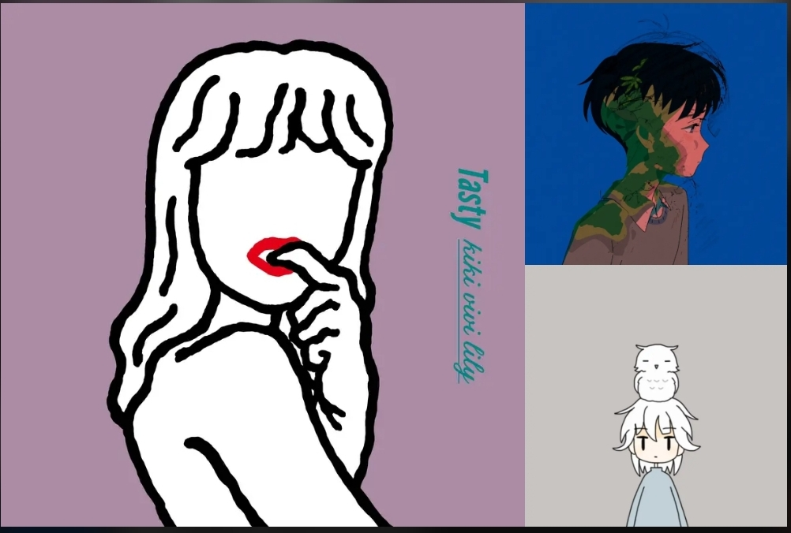

時間と場所のプレイリスト紹介
目次
ナビゲーション1
ナビゲーション2
場面
休日

休日
休日に家でスピーカーで聞きたいプレイリストです
時間
朝
朝
好きな音楽を教えてください。
曲名
アーティスト名
聞きたい時間帯
早朝
午前中
昼
昼過ぎ
夕方
薄暮
夜
深夜
真夜中
聞きたい場面
通勤・通学中
休憩中
散歩中
作業中
勉強中
退勤・下校中
リラックスタイム
寝る前
女子会
友達と
休日
聞きたい場所
電車内
都会
田舎
自室
友達の家
その他
この曲に出会った時のエピソードや、好きな点、好きなパートを教えてください。